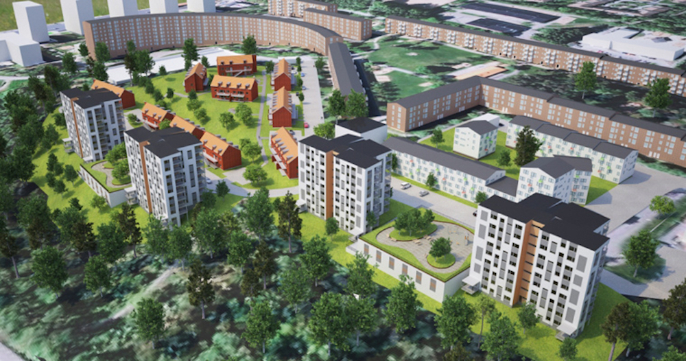
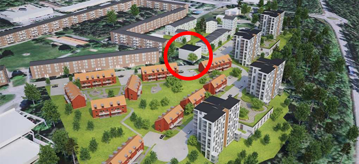
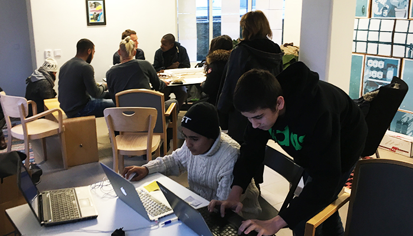
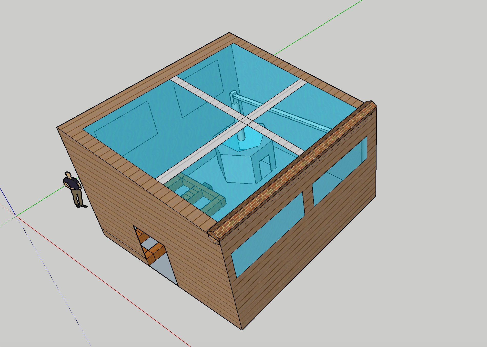

Arkitektur - Social inkludering:
Chalmers tekniska högskola
Under HT16 arbetar en internationell grupp studenter från Chalmers med att ta fram ett byggnadsförslag för det tomma utrymmet framför Merkuriusgatans, Bergsjön kommande nybyggen. Det är en yta på 40x40m som ska användas för sociala möten och bidra till ökad social inkludering i området, mellan de gamla och nya bostäderna samt boende i området. I samarbete med Så ett frö utforskar gruppen nu hur ett eventuellt växthus ska säkerställa just detta. Förslaget kommer i första hand att skickas till Familjebostäder men underlaget ska kunna ligga som grund för fler liknande byggen.
M.Sc. studenter:
- Anders Thelaus

- Yanyi Zhang

- Johan Delvert
- Hastings Oliyo

Uppdragsgivare:
Design för hållbar utveckling, kursbeskrivning
Förort—design och framtida utmaningar är en kurs inom Chalmers Arkitekturs masterutbildning Design för hållbar utveckling som genomförts i Hammarkullen sedan 2008. Från och med 2012 har kursen haft namnet Design and Planning for Social Inclusion, Syftet är att studenterna ska lära sig metoder för medborgarnas deltagande i design- och planeringsprocesser och samtidigt fokusera på upprustning och förnyelse av miljonprogrammet. Social inkludering handlar både om att människor ska få mer inflytande över hur deras närmiljöer utformas och om att alla områden i staden ska ha lika rätt till utveckling. Kursen håller till på Centrum för Urbana Studier på 7:e våningen, Hammarkulletorget 62B (Folkets Hus). Nytt för 2016 är att projektet drivs även i Bergsjön med flera projekt. En av dessa grupper består av fyra studenter, två svenska, en kinesisk och en kenyansk. Deras fokusomårde är tomrummet i Merkuriusgatan mellan nya och gamla byggnader.
Merkuriusgatan, Bergsjön
Mellan Tellusgatan och ner mot Bergsjövägen ska Familjebostäder bygga ca 100 st nya hyresrätter i olika storlekar. Den övergripande detaljplanens syfte för hela det nya bostadsområdet är att möjliggöra för ca 320 lägenheter samt en förskola vid Merkuriusgatan och Tellusgatan i Bergsjön. Detaljplanen omfattar flerbostadshus (hyresrätter) på Familjebostäders fastighet där tidigare parkeringsgarage låg. Övrig mark inom planområdet är kommunal och området har markanvisats. Egnahemsbolaget planerar för äganderätter/bostadsrätter och HP boendeutveckling planerar för bostadsrätter i flerbostadshus i samarbete med UBAB (Ulricehamns betong AB). Från familjebostäders håll fortsätter de att driva utvecklingen när det gäller hälso- och miljövänliga hyresrätter i Göteborg. I projektet samarbetar de med jagvillhabostad.nu, då en del av lägenheterna kommer att utvecklas för unga vuxna. Byggstart är 2018 och inflyttningen är planerad 2020-2021.

Tomrummet, social inkludering.
Mellan de gamla byggnaderna och nybygget finns det en yta på ca 40x40m vars syfte är en social möteplats för boende i området där ca 15x15m kan vara en byggnad på fyra våningar. Då detaljplanen för bostadsområdet mer eller mindre redan var bestämt innan det presenterades för allmänheten är det avgörande att denna yta i ett tidigt skede lyfter fram idéer och förslag av boende. Genom att inkludera deras vision och behov för sociala mötesplatser är avgörande för förslagets framgång då ytan kommer användas främst av dem. Studenternas uppdrag blir att arrangera workshops med en blandad fokusgrupp av boende i området, unga som gamla för att tillsammans arbeta fram förslag som sedan ska presenteras för uppdragsgivarna.

Workshops, strategier för samskapande.
Vid två tillfällen kommer workshops på 2 tim arrangeras i Bergsjön där boende tillsammans med studenterna samskapar förslag för tomrummet vid Merkuriusgatan. Fokusgruppen ska bestå av unga som gamla, men även aktiva i området. Förutsättningen för mötena är att fokusgruppens idéer väger tyngst, vilket är en förutsättning för att boende i området står bakom förslaget. Detta innebär att studenterna inte ska bara lyssna och sedan skapa. De ska etablera en dialog som leder till att alla är med och skapar. Processen ska vara öppen där alla idéer och förslag är välkomna inom projektramen som studenterna bidrar med. Ramen inkluderar yta, material och konstruktion.

11/11 - Första träffen
I Popup Studion Bergsjön, vid Rymdtorget arrangerades den första träffen där studenterna fick samskapa med fokusgruppen som bestod av tre högstadieelever från Bergsjöskolan, en gymnasieelev, två ungdomar som i år tagit studenten, två vuxna som är aktiva i området. Totalt bestod gruppen av fem män och tre kvinnor från Bergsjön. Alla var positiva till förslaget av att ha ett växthus som mötesplats som kombineras med ytor för diverse aktiviteter. Diskussionerna kretsade kring mötet mellan äldre och ungdomar och hur det kan påverka vem som har tillträde. En lösning som föreslogs var att sätta upp tider som är avsedda för de olika grupperna. Ansvar och drift av anläggningen diskuterades och förslaget att boende i samarbete med Familjebostäder kan ansvara för växthuset där boende kan hyra ytor där de kan bedriva odling. Flera modeller utvecklades med hjälp av lera, 3D-modelleringsverktyg samt enklare byggnadsmaterial som trä.

Två förlag som tagits fram under första träffen av högstadieelever.

1/12 - Andra träffen
Den andra och sista träffen kommer att äga rum torsdagen den 1a december i Bergsjön. Då kommer fokusgruppen ta fram de slutgiltiga förslagen för att sedan presentera dem för en större grupp boende från Bergsjön.